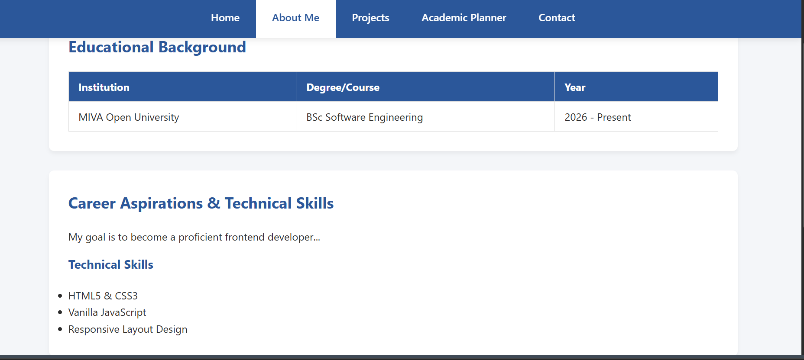
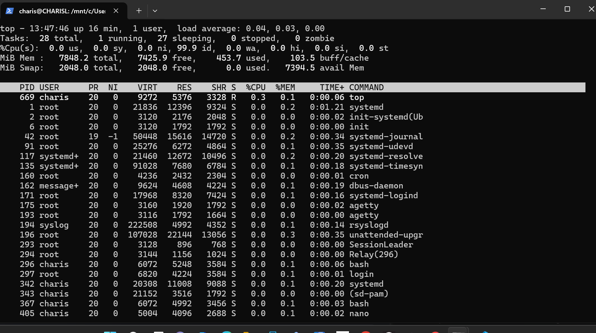

Project One: Portfolio Template

A simple responsive webpage showcasing introductory design patterns.
View Live image
A simple responsive webpage showcasing introductory design patterns.
View Live image
A practical assignment focusing on system aministration basics, navigating the Ubuntu terminal, and monitoring active system processes using the top command tool.
View project DetailsA video recording summarizing my practical coursework assignments.